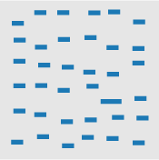
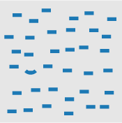
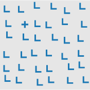

Due: Quiz 2
Blackboard --> This course --> Quizzes --> Quiz2
Lecture Notes
Perception
Colin Ware, a professor at UNH, covers perception in great detail -- in both of his books. Much of what Stephen Few covers in chapter 5 synthesizes Ware's work. Another great resource on visual perception is the free web book by Peter K. Kaiser -- The Joy of Visual Perception It is fairly easy to follow visual design heuristics like "use high contrast," and learning some rules and guidelines for constructing visualizations will go a long way to improve your skills at creating good visualizations. Understanding human visual perception takes a great deal more work but will also improve your ability to ascertain a certain level of mastery in creating visualizations. With regards to high contrast, if we see the image below, the lion's sand color is not in high contrast to the greenish hues of the tall grasses yet we are able to spot the lion quite easily. We are genetically hardwired to see the lion as our genetic ancestry largely doesn't include people that could not see the lion - they were eaten.
Before we get too far into why we so readily see the lion and how that relates to creating good visualizations, it is important to understand that some graphics are well understood because the are part of our visual language and are more similar to words on a page. A graphic like the one shown below would be a good example of this. I've removed the legend. Take a second and see if you can guess what this graphic is showing?
NOAA Weather Map
If you guessed that this is a temperature map for the United States, you would be absolutely correct. The reason you were able to guess what the map was is because you have seen it before. It is part of your learned language. If graphical perception was purely based on learned graphical conventions, understanding human visual perception would not really be important in creating visualizations. One would merely spend time learning the conventions. Conventions are important, however observing the lion in the tall grass isn't part of a learned language - it is sensory.
As shown in the neuroscience video with Scott Murray, explaining visual perception to the layperson, with no background in neuroscience, is difficult. Here are the simplified steps he describes in the video:
- Light enters our eye.
- Gets transduced (i.e., converted from light signals to neural signals) by our retina into visual information.
- Visual information travels to the cortex.
- Stops in the lateral geniculate nucleus in the thalamus.
- Projects directly to the cortex in an area called V1 or primary visual cortex.
- V1 to other cortical areas (e.g., V2, V3, parietal cortex, temporal lobe, etc.).
- There are upwards of 30 different visual areas in the brain.
- Perception is a complex interaction that isn't fully understood. It also depends on what we are processing. For example, motion is processed differently than color.
Sounds simple, right? Visual perception is an attempt by our brains to figure out what caused a pattern on our retina. In that process the brain tries to prioritize what it thinks is important (e.g., the lion in the grass). This importance filtering is referred to as pre-attention. Few gives an example numerical pattern like the one below. Can you count how many times the number 5 appears in the list?
13029302938203928302938203858293
10293820938205929382092305029309
39283029209502930293920359203920
You had to attentively process the entire list to count the number of 5's. This probably took quite a bit of time. Try counting again using the list below.
13029302938203928302938203858293
10293820938205929382092305029309
39283029209502930293920359203920
That was quite a bit easier and illustrative of preattentive processing. We told your brain what was important by using shading or color intensity. There are many visual features that have been identified as preattentive. Christopher G. Healy summarizes them very well in the table below copied from his site on perception in visualization. On Healy's table, he also lists the citations for the psychology studies that examined each visual feature.
|
line (blob) orientation |
length, width |
closure |
 size size |
|
curvature |
 density, contrast density, contrast |
number, estimation |
colour (hue) |
|
intensity, binocular lustre |
intersection |
 terminators terminators |
3D depth cues, stereoscopic depth |
 flicker flicker |
direction of motion |
velocity of motion |
 lighting direction |
|
3D orientation |
artistic properties |
||
|
Table 1: A partial list of preattentive visual features. |
|||
So how does this explain our rapid identification of the lion in the tall grass? The explanation is probably quite a bit more complex than the observable pattern shifts between the lion and her surroundings. As humans, we probably have a tendency to first look where things might be hiding. Nonetheless, the volumes of human visual perception research helps us provide some guidelines and considerations when preparing graphics.
My favorite synthesis of best uses of visual encodings is this chart, compiled by Noah Iliinksy. If you look at how he classifies data, quantitative and ordinal are pretty much identical to Few's classifications. Categorical = nominal and relational = hierarchical. Don't think of this as hard rules. It is more like suggested guidance in selecting visual encodings.
Color
Your retina contains photoreceptors - namely rods and cones. The cones are responsible for your ability to see colors. People with faulty cones may exhibit some form of color blindness. In the text, Few states that roughly ten percent of males and one percent of females suffer from color blindness. True monochromacy (i.e., where people see only black, white, and shades of gray) is exceptionally rare. In visualization, when we talk about color we are talking about the visible spectrum shown below. You'll notice the color changes across the horizontal axis by wavelength. Although wavelength is continuous (quantitative), it is usually horrible at representing quantitative values (as noted in the visual properties table discussed earlier).
The most common forms of color blindness are the subtypes of red-green color blindness. If you want to learn about color blindness in more detail, consult this free ebook. Duetan color vision deficiencies are the most common. Protan is less common, you can see the effects of both subtypes in the two sets of color spectrums below (taken from the ebook referenced above).


One of the easiest ways to make your Tableau visualizations better for color blind folks is to never use the red-green diverging palette in Tableau. The orange-blue diverging palette is considered one of the more color blind friendly palettes but you may find that there are some tradeoffs aesthetically. Tableau has an excellent blog post regarding choosing colors for accessibility. They mention the far less common Tritan (blue-yellow) color vision deficiencies so I've included that color spectrum below for reference.
If we examine Iliinsky's guidelines for use of color, he states that it is only good for categorical data with few levels. You might have noticed that the temperatures in the weather map we displayed earlier are interval data yet they are represented by colors. There is really nothing to reconcile here. Iliinsky's chart provides suggestions. If you know what you are doing, feel free to violate the suggestions. In this case, temperature charts produced by NOAA are part of most peoples visual vocabulary so there is a shared understanding. I cover some more color examples in the video where color can have a preconceived meaning (e.g., gender, political party, etc.).
Tableau Tutorial
In the video, I will be going through a Tableau tutorial on mapping. We can assign geographic roles to dimensions or measures in Tableau to let the software know that the field has geographic data. Those fields, and any field that are automatically recognized as having geographic roles (e.g., city, state, country, zip/postal code, etc.) will be automatically geocoded in Tableau with the proper generated coordinates (latitude and longitude). Tableau is not the most robust mapping tool in that it lacks certain basic features (e.g., the ability to map elevation), and requires commonly used standards for geo-spatial files (e.g., ESRI shapefiles) to be converted. Later in the semester we will cover mapping in a little more depth.
Credits
Lion photo:  Some rights reserved by HeatherBradleyPhotography
Some rights reserved by HeatherBradleyPhotography
Visual Perception and Size Illusions: Interview with Dr. Scott Murray, University of Washington
(used with author permission)A partial list of preattentive visual features, Christopher G. Healy
Properties and Best Uses of Visual Encodings Some rights reserved by Noah Iliinksy